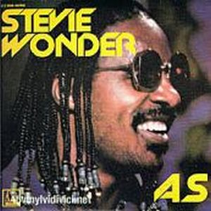
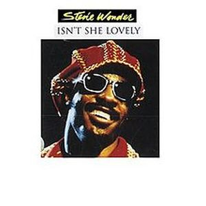
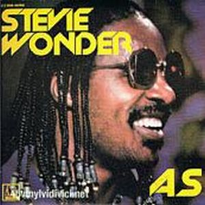
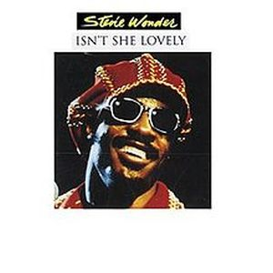

In full artistic and personal maturity, Stevie Wonder -at 26 years old- had complete creative freedom. He owned the publisher Black Bull Publishing and the production company Taurus Productions. He had just renegotiated his contract with Motown through lawyer Johanan Vigoda. The result was 37 million dollars for 7 albums in 7 years and an advance of thirteen million, increasing the royalties from the sale of his records by 20 percent. The best contract in the music industry up to that point. Motown was beginning to get impatient with the delay in releasing albums, but the time finally came.
Non-stop sessions for two and a half years in four different studios: Crystal Sound in Hollywood, Hit Factory in New York City, and the Record Plant advanced technology centers in Los Angeles and Sausalito. The resulted where a double album with bonus EP released in September 28 1976, with an unlimited ambition full of different songs, yet grandiose. Initially the album was to be called "Let's see life the way it is", but in the end he opted for his final name that appeared after a dream, "Songs in the key of life". Some of the many genres that Stevie Wonder includes in this masterpiece of popular musical history are R&B, Pop, Funk, Afrobeat, Soul, Instrumental, jazz, orchestra and experimental. Great songs like "I Wish", "Sir Duke", "Isn't She Lovely"..., there is no song that deserves a positive adjective.
The human and technical team to carry out this work was extraordinary. More than 130 people; Herbie Hancock, George Benson, “Sneaky Pete” Kleinow, Deniece Williams, Minnie Riperton, Trevor Lawrence... their engineer Gary Olazabal remembered how the work methods were something wonderful and extraordinarily spontaneous at any time of the day. Stevie had two fascinating Yamaha GX-1 analog synthesizers that were a prototype for future consumer synthesizers, whose market value could reach $320,000. Only Keith Emerson, Led Zeppelin's John Paul Jones and ABBA composer Benny Andersson had one. He also had three other keyboards, multi-octave pedals, a ribbon controller, and a countless number of buttons to evoke sounds, modulate them and even have others already recorded.
When the basic recording was complete, Wonder insisted on remixing the tracks over and over again, in an unlimited series of configurations. His engineer Olazabal remembered it as "A marathon, and sometimes we wondered if we would ever finish." But finally by the fall of 1976 the project was ready. On the world premiere of the album, Motown spent 30,000 dollars from those times. The world press was gathered on September 7 at 7:30 a.m. for a quick breakfast in the lobby of the Manhattan Essex House, and from there three buses left for Kennedy International Airport, previously passing through Times Square where a huge billboard advertising the launch of the disk. In a chartered DC-9 they were taken to Worcester (Massachusetts) to listen to the album at Long View Farm. A recording studio that had previously been a ranch. Plentiful meal of roast beef, cakes, champagne...waiting for Stevie's appearance. He appeared in a flashy jean, a flashy hat, leather fringes and a gun holster with the phrase "Number one with a bullet."
The album debuted at number 1 on the lists USA and remained there for 14 weeks, harvested 4 Grammys, including best production, best album and best R&B singer. The creative left dry for 3 years, but the track was there. Artists like Kanye West said in 2005 of his own work, "
I'm not trying to compete with what is done now. I am really trying to compete with Innervisions and Songs in the Key of Life."
Songs that one and other one have been sung by artists as diverse as "Pastime Paradise" by Coolio -"Gangsta's Paradise"- one of the hits most heard in the 90`s, and Patti Smith in 2007, "Love's in Need of Love Today" which was used for the Tribute to the Heroes of September 11. The year 2001 and later sung by Dave Hollister in 2002 and Joan Osborne, "I Wish" was used for the movie "Wild Wild West", "Knocks me Of My Feet" was recorded by Luther Vandross in the 96 and Donell Jones in the same year, "if it's magic" by Sarah Connor in 2007, "As" in a duet by Mary J. Blyge and George Michael The list is almost endless.
The album is part of
the U.S. Library of Congress where the audio events that are culturally, historically or aesthetically important,
Disk Diamond are few and not the praise that can be said of a disc where black or white lovers soul, pop, jazz or rock will find a set of extraordinary songs full of positivity, love, reindications ... for all tastes and styles, with the pure essence of this great man that captured the 70 like yours. This album marks the end of a quartet of albums that helped determine the shape of music popular for the next decade.


 


